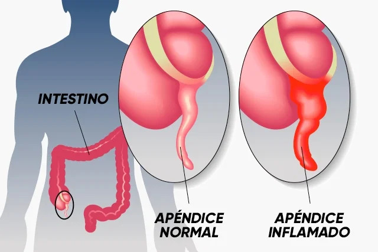

Apendicitis
Descripción
La apendicitis es una inflamación del apéndice. El apéndice es una bolsa en forma de dedo que sobresale del colon en la parte inferior derecha del vientre, también llamada abdomen. La apendicitis causa dolor en la parte inferior derecha del abdomen. Sin embargo, en la mayoría de las personas, el dolor comienza alrededor del ombligo y luego se desplaza.
A medida que empeora la inflamación, suele aumentar el dolor de la apendicitis, y, con el tiempo, se agrava. Aunque cualquiera puede tener apendicitis, lo más frecuente es que suceda en personas entre los 10 y 30 años de edad.
Causas
Una obstrucción en el revestimiento del apéndice, llamado lumen, es la causa probable de la apendicitis. Esta obstrucción puede causar una infección. Las bacterias se multiplican rápidamente, lo que causa que el apéndice se inflame, se hinche y se llene de pus. Si no se trata de inmediato, el apéndice puede romperse y abrirse.
Síntomas
Los síntomas de la apendicitis pueden incluir:
- Dolor repentino que comienza en el lado derecho en la parte inferior del abdomen
- Dolor repentino que comienza alrededor del ombligo y a menudo se desplaza a la parte inferior derecha del abdomen
- Dolor que empeora al toser, caminar o realizar otros movimientos bruscos
- Náuseas y vómitos
- Pérdida del apetito
- Fiebre baja que puede aumentar a medida que empeora la enfermedad
- Estreñimiento o diarrea
- Distensión del estómago y gases
El lugar del dolor puede variar en función de la edad y la posición del apéndice. En el embarazo, puede parecer que el dolor procede de la parte superior del vientre, ya que el apéndice está más alto durante el embarazo.
Pruebas y exámenes
Su proveedor de atención médica puede sospechar de apendicitis dependiendo de los síntomas que usted le describa.
Su proveedor le realizará un examen físico.
Si usted tiene apendicitis, el dolor aumentará cuando presionen suavemente sobre el cuadrante inferior derecho del abdomen. Si el apéndice se ha roto, tocar la zona del vientre puede causar mucho dolor y llevar a que usted apriete los músculos. Una exploración rectal puede encontrar sensibilidad en el lado derecho del recto.
Un examen de sangre con frecuencia mostrará un conteo alto de glóbulos blancos. Los estudios imagenológicos que pueden ayudar a diagnosticar la apendicitis incluyen:
- Tomografía computarizada del abdomen
- Ecografía abdominal
Tratamiento
La mayoría de las veces, un cirujano extirpará el apéndice tan pronto como se realice el diagnóstico. Si una tomografía computarizada muestra que usted tiene un absceso, lo pueden tratar primero con antibióticos. A usted le extirparán el apéndice después de que la infección y la inflamación hayan desaparecido. Los exámenes utilizados para diagnosticar la apendicitis no son perfectos. En consecuencia, la operación puede mostrar que su apéndice está normal. En este caso, el cirujano extirpará su apéndice y hará una exploración en el resto del abdomen para buscar otras causas del dolor.
Expectativas
La mayoría de las personas se recuperan rápidamente después de la cirugía si el apéndice se extirpa antes de que se rompa.
Si el apéndice se rompe antes de la cirugía, la recuperación puede tardar más tiempo. También es más probable que usted presente problemas, tales como:
- Un absceso
- Obstrucción del intestino
- Infección dentro del abdomen (peritonitis)
- Infección de la herida después de la cirugía
Imágenes de la enfermedad
